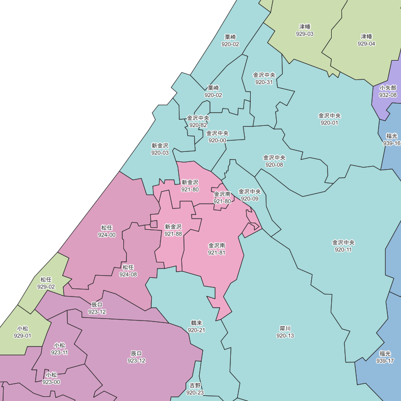
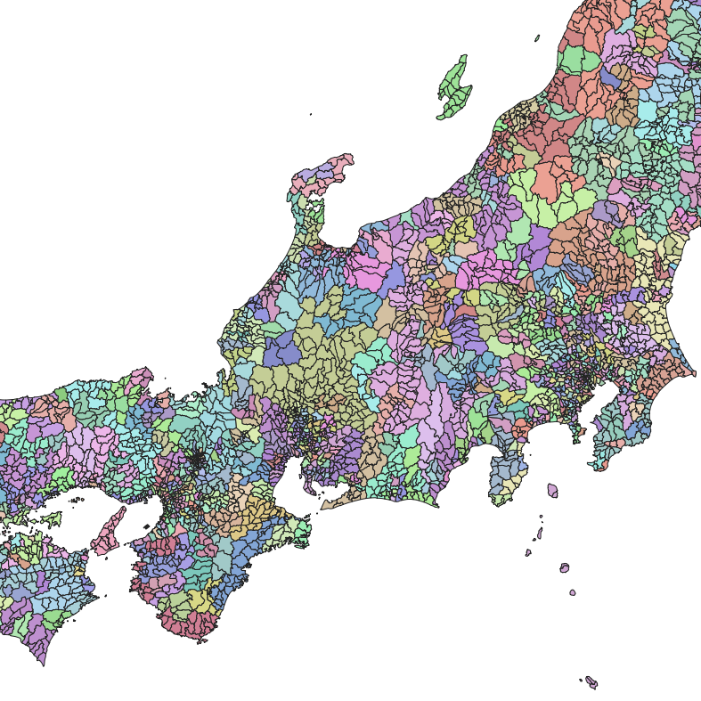

このデータについて
全国を郵便番号の上5桁に基づいて区分した境界データです。
shapefile形式、geojson形式のいずれかでダウンロードできます。GISソフト等で読み込んでご利用ください。
ジオメトリ
マルチポリゴン形式のデータです。
各ポリゴンは、「市区町村」「郵便番号の上5桁」「集配局の管轄区域」のうち、最も小さい単位で区分されています。
例えば「集配局の管轄区域」を単位とするポリゴンを得たい場合、属性値による結合作業を行う必要があります。
郵便番号上5桁は、高層ビル専用番号・事業所個別番号・集配局の郵便番号等の特殊な番号を除きます。
属性
| ken | ポリゴンの都道府県名。 |
|---|
| shichoson | ポリゴンの市区町村名。 |
|---|
| jichi_code | 市区町村の自治体コード(5桁)。 |
|---|
| zip_pre | 郵便番号の1・2・3桁目。 |
|---|
| zip_mid | 郵便番号の4・5桁目。 |
|---|
| 3keta | 郵便区番号の桁数を格納する属性(boolean)
1:郵便区番号が3桁
0:郵便区番号が5桁 |
|---|
| shuhaikyok | 管轄する集配局名。 |
|---|
| kyoku_ken | 集配局の所在都道府県名(同名の集配局の区別用。) |
|---|
※郵便区番号について
郵便番号のうち、集配局区分の基準となる部分を「郵便区番号」と呼びます。
郵便区番号は「郵便番号の上3桁」を指す地域と「郵便番号の上5桁」を指す地域があります。
これらは7桁化以前の旧郵便番号(3桁・5桁)に対応するものです。
当データでは、郵便区番号の桁数を格納する属性を設定しています。(また、郵便区番号が3桁の地域に関しても4・5桁目のデータを格納しています。)
(参考：
郵便番号・バーコードマニュアル)
データ出典
郵便番号および管轄集配局：
日本郵便：郵便番号簿
管轄集配局のデータは2022年7月時点の情報に基づきます。
利用について
このデータは、目的を問わず利用・改変・再配布可能です。
データには誤りを含む可能性があります。このデータを使用したことにより発生した損害等については責任を負いかねます。
データについてお気づきの点があればご連絡ください。
データ作成：はにしな